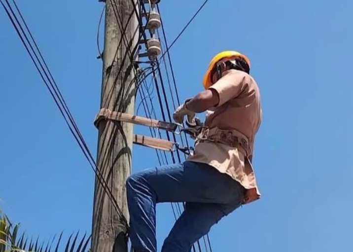
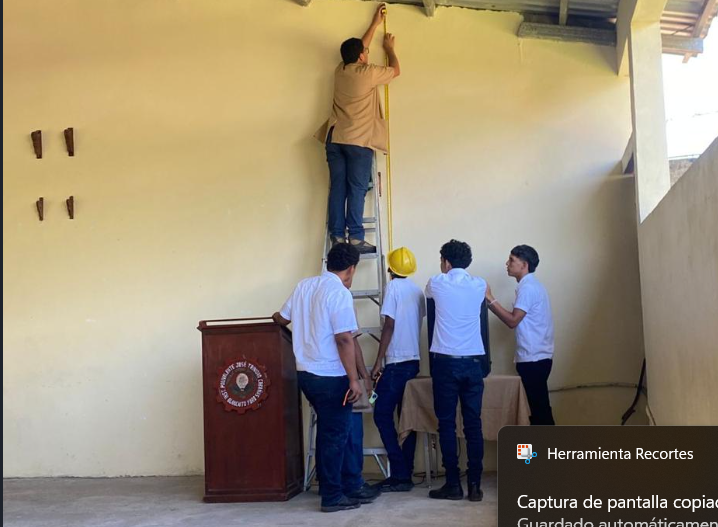
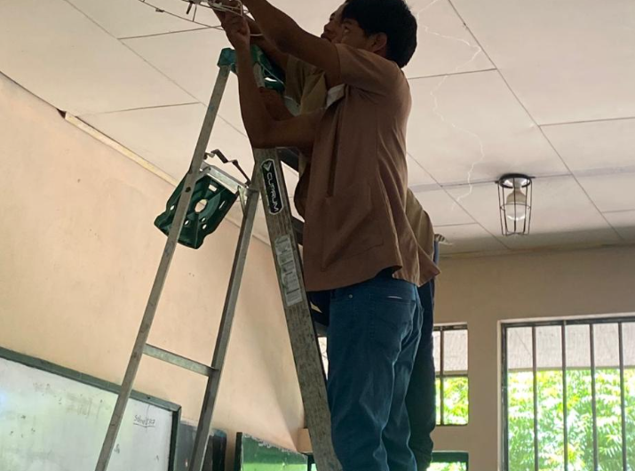
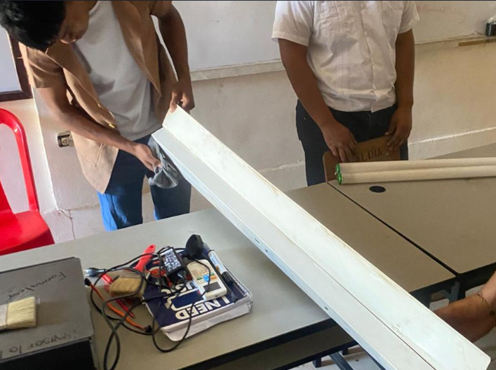
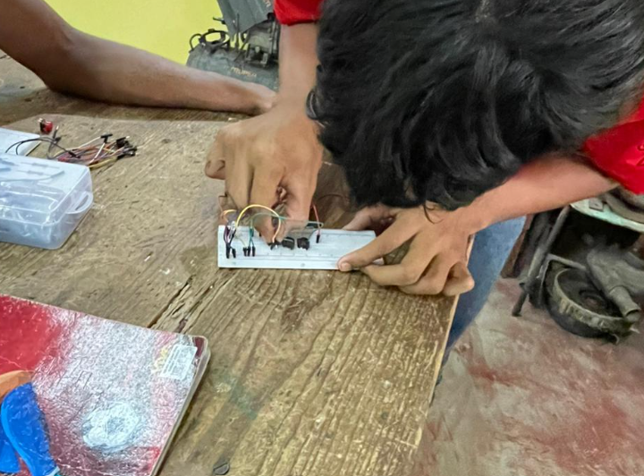
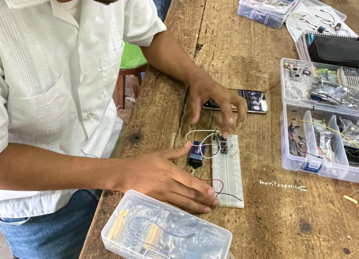
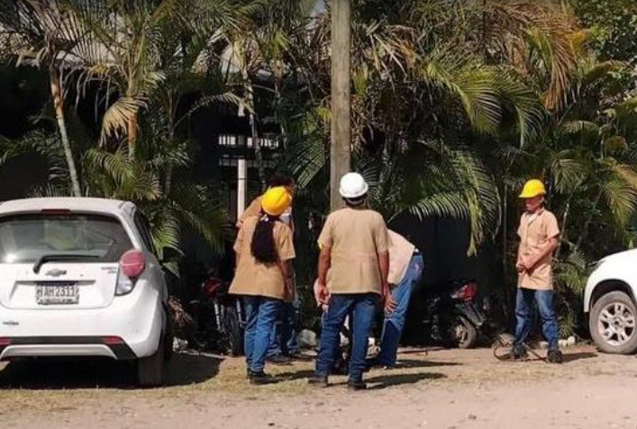
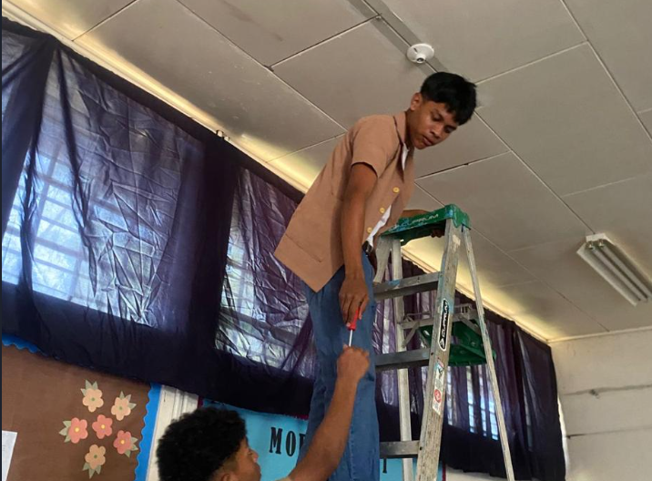
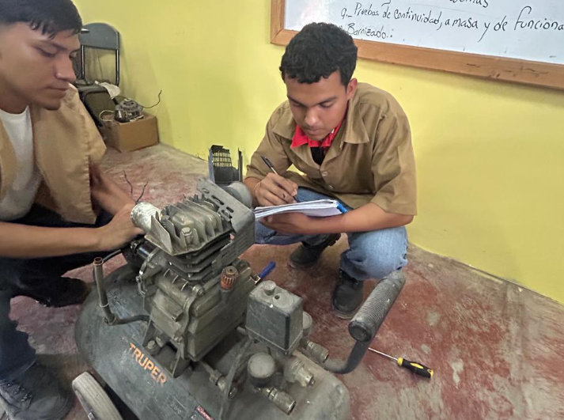
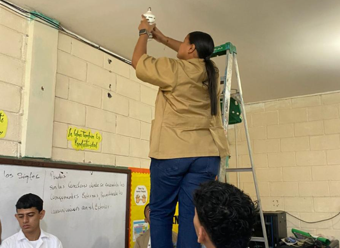

Materias Especializadas de 11vo Grado

Electrotecnia
6 Horas SemanalesEstudio teórico y experimental de las leyes fundamentales que rigen los circuitos eléctricos en corriente continua (CC) y corriente alterna (CA). Analiza fenómenos electromagnéticos, análisis de redes mediante teoremas complejos y el comportamiento de la potencia activa, reactiva y aparente.
Mediciones Eléctricas
4 Horas SemanalesMódulo esencial enfocado en el uso preciso de instrumentos de diagnóstico y medición industrial. Los estudiantes dominan el manejo de multímetros, amperímetros de gancho, osciloscopios, megómetros para aislamiento técnico y telurómetros para la medición de sistemas de puesta a tierra.


Electricidad e Instalaciones Eléctricas
8 Horas SemanalesTaller enfocado en el diseño, canalización y cableado de sistemas eléctricos de interiores residenciales y comerciales. Abarca desde la interpretación de planos arquitectónicos hasta el montaje práctico de luminarias, interruptores, tableros de interruptores térmicos y acometidas principales.
Reparación de Aparatos Electrodomésticos
4 Horas SemanalesAsignatura orientada al diagnóstico y reparación mecánica y eléctrica de equipos del hogar y la oficina. Incluye sistemas con motores universales (licuadoras, taladros), sistemas térmicos (planchas, hornos) y principios básicos de refrigeración y climatización elemental.

Materias Especializadas de 12vo Grado

Control y Mando de Sistemas Eléctricos y Automatización
8 Horas SemanalesEstudio integral e implementación avanzada de sistemas de automatización industrial mediante lógica cableada y lógica programable. Abarca el análisis, programación y cableado de relevadores, temporizadores y Controladores Lógicos Programables (PLC), así como la integración de sensores industriales y actuadores.
Taller de Rebobinado de Máquinas Eléctricas
8 Horas SemanalesTaller puramente práctico y analítico enfocado en los procesos de reconstrucción, cálculo y reparación de devanados para motores eléctricos monofásicos, trifásicos y transformadores. Incluye pruebas de aislamiento, toma de datos de placas, cálculo de calibres de alambre y aplicación de barnices dieléctricos.


Fundamentos de Electrónica y Telecomunicaciones
5 Horas SemanalesIntroducción al comportamiento de componentes semiconductores básicos como diodos, transistores, tiristores y circuitos integrados. Asimismo, se estudian los sistemas de acondicionamiento de señal, fuentes de alimentación reguladas y los principios de transmisión de datos aplicados a redes de control técnico.
Instalaciones Industriales y Redes de Distribución
8 Horas SemanalesMódulo crítico que cubre las directrices técnicas para el diseño, dimensionamiento y montaje de alimentadores eléctricos trifásicos de gran escala, canalizaciones en tubería rígida pesada, tableros de distribución general y cálculo de líneas aéreas y subterráneas de baja y media tensión.


Máquinas Eléctricas
5 Horas SemanalesAborda los fundamentos teóricos y operativos del electromagnetismo aplicado a máquinas estáticas (transformadores de potencia) y máquinas rotativas (generadores, motores síncronos y asíncronos). Se analizan curvas de rendimiento, conexiones de transformadores y acoplamiento de alternadores.
Energías Renovables
2 Horas SemanalesAsignatura orientada a la transición energética global. Se enfoca en el cálculo, diseño, selección e instalación de sistemas solares fotovoltaicos (aislados e interconectados a la red) y los principios operativos de la generación eólica y biomasa a pequeña escala.


Gestión Industrial y Habilidades para la Vida
4 Horas SemanalesCombina el desarrollo de aptitudes directivas y operativas esenciales para el entorno industrial con habilidades interpersonales. Incluye la formulación de presupuestos y cotizaciones eléctricas, control de almacenes y herramientas, normativas de seguridad e higiene (OSHA), liderazgo, ética profesional y trabajo colaborativo.